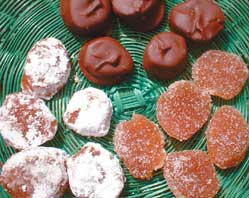

Here's a Mother Earth News reader's recipe for makingcandied pieces of ginger root:
1 1/2 cups of water, or more if necessary
1 cup of granulated sugar or alternate sweetener
1 tablespoon lemon juice
1 cup firm ginger root, peeled and sliced a quarter-inchthick
(optional: bittersweet baking chocolate or extra sugar forcoating)
Bring the water, sugar and lemon juice to a boil, stirring untilthe sugar is dissolved. Add the sliced ginger and return to a boil.Lower the heat to a simmer and cover. Raw ginger takes three tofive hours to cook completely. When thoroughly cooked, it should betender and almost translucent. If the syrup cooks down too fast anddoesn't cover the ginger, add more water. During the last hour ortwo of cooking, test the pieces to be sure they're done. If thesyrup isn't thick enough (the consistency of honey) when the gingeris nearly done, remove the lid. As it thickens, the syrup willbubble up, so be alert to avoid a mess. When the ginger isfinished, let the mixture cool for half an hour.
Strain the ginger pieces out of the syrup. (Save theginger-flavored syrup in a jar with a tight lid for use on icecream, pancakes, waffles, yogurt or to make ginger ale.) Let theginger dry overnight on racks or a cookie sheet covered with waxpaper.
Toss the ginger, a few pieces at a time, in a bowl of sugar. Letthe well-coated pieces dry for a few hours on the rack or cookiesheet. If the pieces absorb too much sugar and get sticky, justrecoat them.
Another way to finish candied ginger is to coat it in meltedchocolate, kept warm in a small double boiler. Dip the pieces witha fork, tap off the excess and put the coated pieces on wax paperuntil they're completely dry.
Press two pieces of either the sugar-coated or chocolate-coatedcandy together. If they do not stick to each other, they are readyto store in a tightly-closed container.
|
 |
|
|